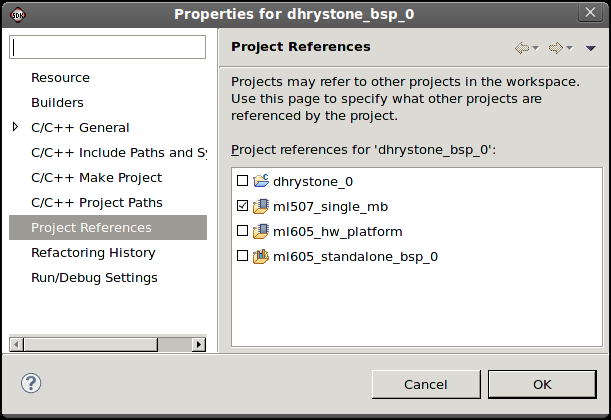
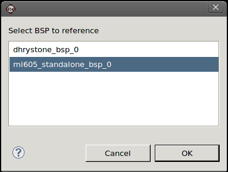

Embedded hardware components
Hardware platform specification
In an SDK workspace, you can have multiple hardware projects and a single software project that is portable across these hardware platforms. At any given time, the software BSP project and the software applications associated to that BSP project are targeted (or referenced) to a single hardware project. So to run or debug a software project on another hardware project, you must re-target your software BSP project to another hardware project.
To re-target your software project to another hardware project:

Alternatively, if you have two BSP projects each targeting a different hardware project, you can re-target your software application to run or debug on a different hardware project by changing the BSP reference accordingly.
To re-target your software project:


Embedded hardware components
Hardware platform specification
Copyright © 1995-2013 Xilinx, Inc. All rights reserved.